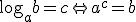
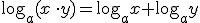
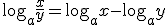
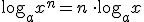

Matemática financiera
Resumen
El logaritmo en base a de b, si a>0 y a≠1, es:

PROPIEDADES




Para calcular un porcentaje, x, de una cantidad:

Si se expresa en forma decimal es el tanto por uno.
Para aumentar o disminuir una cantidad C en un porcentaje usamos una regla de tres o las siguientes fórmulas:
- aumento

- disminución

Una sucesión es un conjunto ordenado de números (u otros objetos), generados de acuerdo a una regla.
Cada número de la sucesión se llama término, y le denotamos ai. Llamamos término general de la sucesión, an, a la expresión que representa cualquier término de la sucesión.
Una progresión geométrica es una sucesión de modo que el cociente de cada par de números consecutivos es constante. Esta constante se llama razón de la progresión.
Término general: an = a1· rn-1
Si queremos sumar los k primeros términos de una progresión geométrica, usamos la fórmula:

Interés simple
I = C·r·t
En t años obtendré: Cf = C + C·r·t = C·(1+rt)
Si se quiere calcular el interés generado en períodos inferiores a un año es preciso dividir el tipo de interés: entre dos si es semestral, entre tres cuatrimestral,… El tiempo y el rédito deben estar en la misma unidad.
Interés compuesto
Por otro lado, cuando añadimos los intereses a la cantidad prestada, tenemos interés compuesto. La unidad en que se mide el tiempo, t, marca el momento en que se incorporan los intereses al capital, el llamado período de capitalización.
Si el período de capitalización es de un año:
Entonces, la cantidad final será:


Las anualidades de capitalización son cantidades fijas que se depositan cada año a un interés compuesto durante un número fijo de años. Al final se consigue el capital más los intereses generados:


En caso de que haya k aportaciones al año, quedaría:
Las anualidades de amortización son cantidades fijas que se abonan cada año durante un número fijo de años para devolver un préstamo. Al final se devuelve el capital prestado más los intereses generados.
En este caso la fórmula de la anualidad de amortización que se ha devolver al final de los t años que dure el préstamo es:

Si se hacen k devoluciones al año:

Obra publicada con Licencia Creative Commons Reconocimiento No comercial Compartir igual 4.0